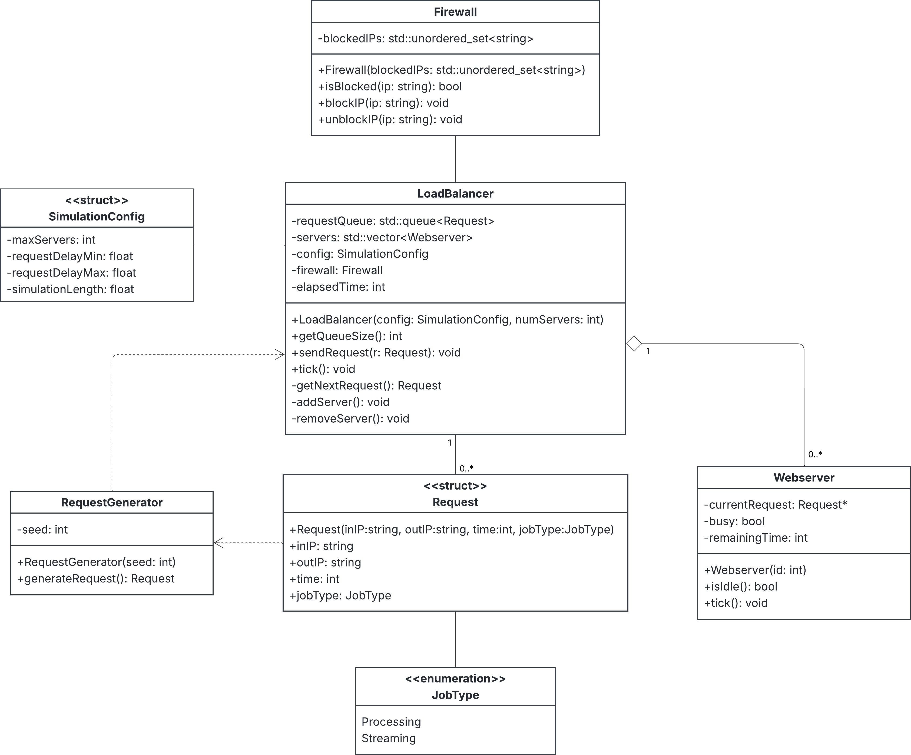

System Architecture Diagram

Click on the diagram to view in full size
System Design Overview
This system simulates a load balancer distributing web requests to multiple web servers over a set number of clock cycles.
LoadBalancer - The central controller that maintains a queue of Request objects and a dynamic collection of Webserver instances. Each clock cycle, the load balancer assigns queued requests to idle servers and advances the simulation time.
RequestGenerator - Produces random IP addresses, processing times, and job types to simulate incoming traffic to the system.
Firewall - Filters incoming requests by blocking specific IP addresses before they are added to the queue, providing security at the entry point.
SimulationConfig - A struct that stores configurable parameters such as maximum servers, request delay ranges, and total simulation length. This allows the system to be easily modified without changing internal logic.
Webserver - Processes one request at a time and requests a new job from the load balancer when it becomes idle.
Request - Represents individual web requests with properties including IP address, output identifier, processing time, and job type.
Dynamic Scaling Capability
The system dynamically scales the number of web servers based on queue size thresholds. If the queue exceeds a defined upper bound, a server is added to handle the increased load. If it drops below a lower bound, a server is removed after a cooldown period, optimizing resource utilization.
Workflow
Each Webserver processes one request at a time and requests a new job from the load balancer when it becomes idle. This ensures efficient distribution of work across all available servers while maintaining optimal performance during varying load conditions.